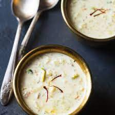

Kheer

A Rice Kheer recipe that is a keeper and my family’s heirloom recipe that you will love for its deliciousness. This traditional Indian rice pudding made with basmati rice, whole milk, sugar, nuts, saffron and cardamom is slow-cooked to perfection making for a rich, creamy kheer. I share our favorite rice kheer recipe that is made easy with my stepwise photos and video.
Ingredients
- 1/2 liter- milk
- 2 tsp-rise
- Sugar- 3/4 cup
- 1/4 tsp- Cardmom Powder
- Cashews
- Ghee- for frying
Steps
- Boil milk in a large cooker.
- Add rice in milk for about 20 mins in a low flame and remove from fire.
- When the steam subsides open and boil again. Add the sugar and stir well.
- Now cook for another 20 mins in a low flame with the weight.
- Open the cooker, when steam subsides, add cardamom and mix well.
- Fry the cashews in ghee and add to the milk kheer.
- Serve.
- Recipe courtesy: Subbu's Kitchen